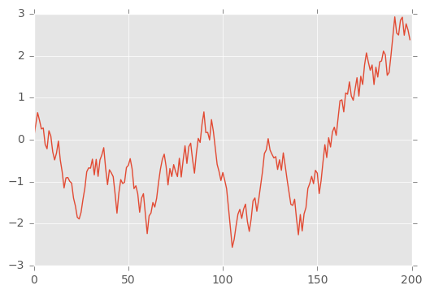

Writing in notebook¶
Would not it be great if most of the material could be written in jupyter notebook?
Well, now that’s possible with the help of nbsphinx extension
Note: This page has been generated from a notebook
In [4]:
%pylab inline
plt.style.use('ggplot')
a = rand(200)-0.5
plot(cumsum(a))
Populating the interactive namespace from numpy and matplotlib
Out[4]:
[<matplotlib.lines.Line2D at 0x7f62e55f3128>]

Heading level 2¶
... should also just work.